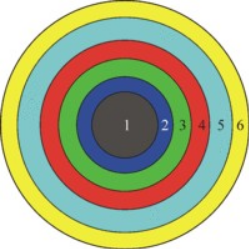
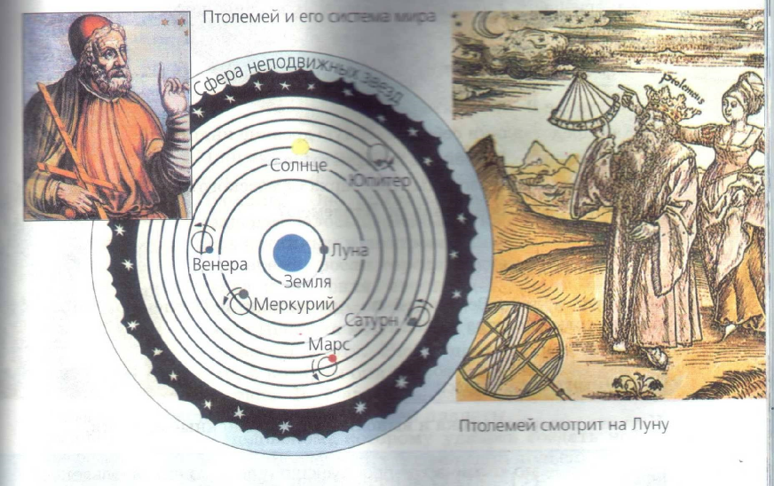

Занятие №2
Тема урока:
ВВЕДЕНИЕ. АСТРОНОМИЯ, ЕЕ СВЯЗЬ С ДРУГИМИ НАУКАМИ. НАЗЕМНЫЕ И КОСМИЧЕСКИЕ ТЕЛЕСКОПЫ.
Литература:
1. Кунаш М.А. Астрономия: общеобразовательная подготовка: учеб.пособие для колледжей/ М.А.Кунаш. – Ростовн/Д: Феникс, 2019.-285с.
2. http://msk.edu.ua/ivk/astronomy.php
Астрономия Аристотеля как «наиболее физическая из математических наук».
Космология Аристотеля.
Древнегреческий философ Аристотель родился в 384 году до н.э. в Стагире (поэтому получил прозвание Стагирит) в семье врача. Отец и был первым учителем Аристотеля. В подростковом возрасте он осиротел, но его опекун Проксен сделал все, чтобы любознательный юноша продолжил учение.
Аристотель был воспитателем Александра Македонского. Он основал Ликей (Лицей), или перипатетическую школу. Она называлась так от (от греч. περιπατέω — прогуливаться, прохаживаться) – так как Аристотель во время чтения лекций прогуливался с учениками.
Аристотель был первым мыслителем, создавшим всестороннюю систему философии, охватившую все сферы человеческого развития: социологию, философию, политику, логику, физику
Он разделяет науки на теоретические, цель которых — знание ради знания, практические и «поэтические» (творческие). К теоретическим наукам относятся физика, математика и «первая философия» (она же — теологическая философия, она же позднее была названа метафизикой). К практическим наукам — этика и политика (она же — наука о государстве).
Космология Аристотеля
Космоло́гия (космос + логос) — раздел астрономии, изучающий свойства и эволюцию Вселенной в целом. Основу этой дисциплины составляют математика, физика и астрономия.
На рисунке изображена структура Вселенной по Аристотелю. Цифрами обозначены сферы: земли (1), воды (2), воздуха (3), огня (4), эфира (5), Перводвигатель (6). Без соблюдения масштаба.
По Аристотелю, Вселенная делится на две части: нижнюю (подлунную) и верхнюю (надлунную).
Подлунная область состоит из четырех элементов: земли, воды, воздуха, огня. Эта область изменчива, ее нельзя описать на языке математики.
Надлунная область – неизменна и вечна, соответствует идеалу совершенной гармонии. Она состоит из эфира, особого вида материи, который не встречается на Земле.
Каждому виду материи соответствует свое место во Вселенной: земля – в центре мира, затем идет вода, воздух, огонь, эфир. Бренность земного доказывалась тем, что движение там шло по вертикальным линиям и имело начало и конец. Элемент подлунного мира всегда стремится на свое место, для этого он приводил доказательство: если поднять в руке горсть земли, она упадет вниз, а если разжечь огонь, то он будет стремиться вверх.

Элементы земли и воды, стремящиеся вниз, считались абсолютно тяжелыми. Элементы воздуха и огня, стремящиеся вверх, считались абсолютно легкими. А когда элементы достигают естественного места, движение их прекращается. Отсюда следовал вывод: Вселенная конечна, пустота существовать не может, Земля неподвижна, мир существует в единственном экземпляре.
В божественном, надлунном небе существует лишь один вид дви�жения — равномерное непрерывное круговое движение небесных тел. Небесные тела вращаются вокруг Земли по круговым орбитам, они прикреплены к материальным, сделанным из эфира, вращаю�щимся сферам. Существуют сферы Луны, Меркурия, Венеры, Со�лнца, Марса, Юпитера, Сатурна и сфера неподвижных звезд. За пос�ледней находится перводвигатель — Бог, который и придает движе�ние сферам. Космос — конечен и вечен; он никогда не родился и никогда не погибнет, никогда не возникал и принципиально неуничтожим.
Аристотель считал небесные светила имеющими божественную природу (хотя не называл их богами), поскольку для составляющего их элемента, эфира, характерно равномерное движение по окружности вокруг центра мира; это движение является вечным, поскольку на окружности нет никаких граничных точек.
Земля, являющаяся центром Вселенной, шарообразна. Это геоцентрическая система мира. Доказывал это Аристотель характером лунных затмений, при которых тень, бросаемая Землёй на Луну, имеет по краям округлую форму, что может быть только при условии шарообразности Земли. Используя расчеты античных математиков, Аристотель считал окружность Земли равной 400 тыс. стадий (для нас недостаточно определенная единица измерения расстояния, предположительно от 185 до 195 м).
Аристотель первым доказал шарообразность и Луны на основе изучения её фаз.
Геоцентрическая космология Аристотеля сохранилось вплоть до Коперника. Он считал шарообразным и небесный свод, и все небесные светила. Но доказывал эту мысль Аристотель неправильно: шарообразность небесных светил он выводил из ложного взгляда, что «сфера» является наиболее совершенной формой.
Важную роль в космологии Аристотеля играл принцип отсутствия пустоты в природе. («Природа не терпит пустоты».) Введение такого представления означало, что Аристотель строит континуальную кар�тину мира, принципиально противоположную атомистической, дис�кретной.
Картина мира Аристотеля кардинально отличается от современ�ной естественно-научной картины мира. Аристотелевский Космос иерархически организован, состоит из многих субординированных уровней, слоев. Каждый слой обладает своими специфическими зако�номерностями, и в каждой точке мира, в каждом направлении про�странства действуют свои законы. Современная физика строится на принципиально иной основе — на идее однородности и изотропнос�ти пространства и времени (это значит, что в любой точке и в любом направлении пространства (и времени) законы природы проявляют себя одинаковым образом). Переход от аристотелевского неоднород�ного и анизотропного представления о Вселенной к однородной и изотропной картине мира в XVII в. было важнейшей предпосылкой формирования уже второй научной картины мира
Гиппарх Никейский: первые математические теории видимого движения Солнца и Луны и теории затмений.
Гиппарх - древнегреческий ученый, один из основоположников астрономии.Родился в городе Никее, жил и работал на острове Родос. Гиппарху принадлежит заслуга создания первых математических теорий видимого движения Солнца и Луны и теории затмений. Он правильно определил размер Луны и ее расстояние от Земли. Сопоставляя результаты личных наблюдений и наблюдений своих предшественников, он с большой точностью вычислил продолжительность солнечного года (ошибка не более 6 мин).
Гиппарх и другие астрономы древности уделяли много внимания наблюдениям движений планет.
Наблюдаемое с Земли движение планет довольно сложно: скорость планеты то увеличивается, то уменьшается, временами она и вовсе останавливается, после чего начинает двигаться в обратном направлении. При этом планета иногда описывает на небе петли. Эта сложность, как сейчас мы знаем, является результатом того, что наблюдения ведутся с Земли, которая сама обращается вокруг Солнца.
Гиппарх же, считавший Землю неподвижной, полагал наблюдаемое движение планет реальными. В объяснении движения планет он следовал теории эпициклов. Теория эпициклов давала с известным приближением чисто формальное, геометрическое представление о движении планет.
Составленные Гиппархом таблицы положений Солнца и Луны позволили предвычислять моменты наступления с ошибкой 1-2 ч.
Гиппарх впервые стал использовать в астрономии методы сферической тригонометрии. Он повысил точность наблюдений, применив крест нитей для наведения на светило в угломерных инструментах - секстантах и квадрантах.
Ученый составил огромный по тем временам каталог положений 850 звезд, разделив их по блеску на 6 степеней (звездных величин).
Гиппарх ввел географические координаты - широту и долготу, и его можно считать основателем математической географии.
Птолемей (астрономия как «математическое изучение неба»). Создание первой универсальной математической модели мира на основе принципа геоцентризма
Величайшего математика, исследователя географии и астрономии 2 века нашей эры Клавдия Птолемея невозможно обойти вниманием, повествуя о тех, кто по праву считается крупнейшими учеными древности, поскольку он является значимой фигурой в истории науки времен эллинизма
Птолемею приписывают космологическую концепцию, известную как «система мира Птолемея», в которой Земля располагается по центру небесной системы, а по малым кругам у нее вращаются Луна, Меркурий, Венера, Солнце, Юпитер, Марс, а вместе с ними Сатурн.
Главным итогом античной космологии стала геоцентрическая концепция Аристотеля − Птолемея. Геоцентрическая система мира Аристотеля—Птолемея находилась в согласии с религиозным вероучением о центральном месте Земли во Вселенной, и поэтому церковь в течение многих веков препятствовала развитию правильных научных представлений о строении мира. В систему Птолемея вносились небольшие изменения, но основной ее принцип оставался неизменным.
В своем труде Птолемей значительно усовершенствовал математический аппарат астрономии — сферическую тригонометрию. В течение столетий использовались вычисленные им таблицы синусов. Он улучшил гиппархову теорию Луны и создал полную математическую теорию всех известных тогда видимых движений планет. В конструкции Птолемея нашла реализацию и наиболее прямое выражение поразительная по своей глубине мысль Платона — объяснять сложные явления методом разложения их на простые правильные элементы, делающие эти явления доступными для описания на языке математики (которую в дальнейшем два других гения — Леонардо да Винчи, а за ним Галилей назовут «языком Природы»).
Вместе с тем в концепции Птолемея, быть может, именно благодаря ее полноте, явственно обнаружились существенно различающиеся пределы справедливости, с одной стороны, общей идеи, а с другой — конкретной программы Платона в качестве основ астрономической картины мира. Идея — изучать сложное через разложение на простые элементы — дожила до наших дней и продолжает «работать». Но ее конкретизация в виде программы — свести все движения небесных тел (видимые) к круговым и равномерным (как истинным) — оказалась неоправданно «безграничной» экстраполяцией весьма частного вида движений и потому была отвергнута дальнейшим ходом развития науки (уже к началу XVII в.). Под давлением фактов уже сам Птолемей отступил от этой программы многозначительным введением экванта. Так, в недрах геоцентрической теории по мере ее совершенствования закладывались предпосылки ее будущего краха.
Теория Птолемея получила широкую известность4 и произвела огромное впечатление не только на его современников. В последующие века, начиная с III в., ее изучали в учебных заведениях, комментировали. Попав (еще до гибели Александрийского научного центра в VII в.) в Индию, а оттуда, к VIII в., к арабским астрономам и математикам, «Альмагест» в арабском переводе достиг в IX в. Европы. Здесь теория Птолемея после ее освоения и препарирования богословами безраздельно господствовала вплоть до XVI в.
Вместе с тем теория Птолемея как весьма точное по тем временам математическое описание движений Солнца, Луны и планет, способная предвычислять астрономические явления, в течение многих столетий обеспечивала нужды практической вычислительной астрономии, способствовала развитию мореходства и торговли в значительной степени стимулировала и обеспечила великие географические открытия.
Звездное небо
Небесная сфера — это воображаемая сферическая поверхность произвольного радиуса, в центре которой находится наблюдатель. Небесные тела проектируются на небесную сферу.
В 1603г Иоганн Байер (1572-1625, Германия) публикует каталог всех видимых звезд и впервые вводит их обозначение буквами греческого алфавита в порядке уменьшения блеска (наиболее яркие). Самые яркие – α, затем β, γ, δ, ε и т.д.
Поэтому звезды сейчас обозначаются: Вега (α Лиры), Сириус (α Большого Пса), Полярная (α М. Медведицы).
Названия ярких звезд (стр.20)
В 125г до НЭ ГИППАРХ (180-125, Греция) вводит деление звезд на небе по видимой яркости на звездные величины, обозначив самые яркие - первой звездной величины (1m), а еле видимые – 6m (т. е. разность в 5 звездных величин). Позже фотометрическими способами при уточнении звездных величин пришлось ввести дробные числа и даже отрицательные. /показать обозначение - Запись типа m=-1,6m). Итак звездная величина - видимая яркость (блеск) звезды.
Звездная величина (стр.21)

Точка небесной сферы, которая остается неподвижной при суточном движении звезд, условно называется северным полюсом мира. Противоположная точка небесной сферы называется южным полюсом мира.
Отвесная линия, проходящая через наблюдателя, пересекает небо над головой в точке зенита и в диаметрально противоположной точке, называемой надиром.
Ось видимого вращения небесной сферы, соединяющую оба полюса мира и проходящую через наблюдателя, называют осью мира.
На горизонте под северным полюсом мира лежит точка севера, диаметрально противоположная ей точка — точка юга. Точки востока и запада лежат на линии горизонта и отстоят от точек севера и юга на 90°
Явления прохождения светил через небесный меридиан называются кульминациями.
РР' – Ось мира = ось видимого вращения небесной сферы (параллельна оси вращение Земли).
Р и Р' – Полюса мира (северный и южный).
ZZ' отвесная (вертикальная) линия.
Z – зенит, Z'– надир = точки пересечения отвесной линии с небесной сферой.
Небесный меридиан – большой круг небесной сферы, проходящий через зенит Z, полюс мира Р, южный полюс мира Р', надир Z'
N – точка севера, S – точка юга.
Вертикал (круг высоты) – полукруг небесной сферы ZОМ.
Небесный экватор – линия окружности, полученная от пересечения небесной сферы с плоскостью проходящая через центр небесной сферы перпендикулярно к оси мира.
Видимое движение Солнца и Луны
Эклиптикой называется большой круг небесной сферы, по которому в течение года перемещается центр Солнца
Каждому хорошо известно, что высота Солнца над горизонтом в полдень, то есть его высота в верхней кульминации, меняется в течение года. Летом Солнце поднимается очень высоко; самое высокое положение оно занимает 22 июня. Этот день (самый длинный) называют днем летнего солнцестояния. Каждый следующий день Солнце кульминирует все ниже и ниже. Всего ниже его верхняя кульминация происходит 22 декабря; это день зимнего солнцестояния. 22 декабря день бывает самым коротким, потому что в этот день путь Солнца над горизонтом всего короче; оно поздно восходит и рано заходит.
Около 21 марта и 23 сентября высота Солнца в верхней кульминации бывает средней между высотами его в летнем и зимнем солнцестоянии, а день по продолжительности становится равен ночи. Поэтому 21 марта называют днем весеннего равноденствия, а 23 сентября - днем осеннего равноденствия.
Двенадцать созвездий, через которые проходит эклиптика, образуют пояс зодиака и называются зодиакальными (зодиак - слово греческое, означающее «круг животных»). Вот эти созвездия: Рыба, Овен, Телец, Близнецы, Рак, Лев, Дева, Весы, Скорпион, Стрелец, Козерог, Водолей.
Движение и фазы Луны
Луна - единственное небесное тело, которое обращается вокруг Земли, если не считать искусственных спутников Земли, созданных человеком за последние годы.
Луна непрерывно перемещается по звездному небу и по отношению к какой-нибудь звезде за сутки смещается навстречу суточному вращению неба приблизительно на 13°, а через 27,1/3 суток возвращается к тем же звездам, описав по небесной сфере полный круг. Поэтому промежуток времени, в течение которого Луна совершает полный оборот вокруг Земли по отношению к звездам, называется звездным (или сидерическим) месяцем; он составляет 27,1/3 суток.
Луна - это темное шарообразное тело. Когда Луна находится между Землей и Солнцем, обращенное к нам ее полушарие не освещается Солнцем, и мы Луны не видим. Эта фаза Луны называется новолунием. Когда Земля находится между Солнцем и Луной, все обращенное к нам полушарие Луны ярко освещено Солнцем. Эта фаза называется полнолунием.
Звездное небо
Практическая работа
Подвижная карта звездного неба (ПКЗН), или планисфера, – это круглая звездная карта небольших размеров, с помощью которой можно предельно просто определить, какие космические объекты вы сможете наблюдать в данном месте в данное время. Необходимость в такой карте возникла еще в древние времена, когда стало понятно, что вид звездного неба не остается неизменным. За счет двойного вращения нашей планеты (вокруг своей оси и вокруг Солнца), видимый небосклон претерпевает значительные изменения как в течение суток, так и в течение года. Поэтому и была создана подвижная звездная карта, которая позволяла определять положения созвездий и ярчайших объектов в зависимости от следующих параметров: географической широты местности, из которой предполагается вести наблюдения, даты и времени наблюдений.
Как это работает? Такая подвижная карта состоит из карты звездного неба и подвижного круга, который устанавливается сверху. По периметру карты обозначены даты, по периметру круга - время. Вращая круг, вы совмещаете эти два параметра и получаете срез видимого участка звездного неба (будет виден в очерченной области накладного круга), который вы сможете наблюдать здесь и сейчас. Более того, на карте не указывается год, поэтому вы можете быть уверены, что и сто лет назад, и через сто лет после звездное небо было и будет именно таким.
Особенности карты
* Карта позволяет быстро определить вид звездного неба в любой момент времени. С помощью подвижного круга установите дату напротив шкалы времени. Например, 21 января в 22:00.
* В центре звездной карты – Полюс мира, а рядом с ним – Полярная звезда.
На звездную карту нанесены изображения всех известных звезд до 3-й звездной величины. Размеры кружка соответствуют яркости объекта. Самые яркие звезды обозначены собственными именами.
ПКЗН – у каждого на столе. Посмотреть созвездия. Показывается, как определяется вид небосвода в течение суток.
1. Назовите несколько созвездий незаходящих в нашей местности
2. Найдите линию небесного меридиана, эклиптику.
3. Какие яркие звезды будут сегодня кульминировать между 20 и 21 часами?
4. Найдите на ПКЗН например звезду Вега, Сириус. В каких они созвездиях находятся?
Контрольные вопросы:
1. Что такое небесная сфера?
2. Какие линии и точки небесной сферы вы знаете?
3. Какие наблюдения доказывают суточное вращение небесной сферы (служит ли это доказательством вращения Земли вокруг оси).
4. Можно ли, используя горизонтальную систему координат, создать карты звездного неба?
5. Что такое кульминация?